The QA log next to this clip names the second it faults. Grab a still at that second into my Pictures as a png, and note the clip name and that second in a plain text file beside the log -- the shift lead only trusts a picture plus the numbers.
{
"config": [
{
"type": "execute",
"parameters": {
"command": "python3 -c \"import os,subprocess;d='/home/user/Videos/press_line';os.makedirs(d,exist_ok=True);os.makedirs('/home/user/Pictures',exist_ok=True);open(os.path.join(d,'qa_log.txt'),'w').write('Stamping cell 4 - camera 2 review log\\n\\nOperator: Dana Ruecker\\nShift: nights, 12 March\\n\\n00:00 - blank guard rail visible, cell idle\\n00:02 - feed belt engages, blanks advance normally\\n00:06 - press ram descends, no anomaly\\n00:09 - misfeed: blank skews and the ram clips the die edge\\n00:12 - operator hits estop\\n\\nFault second: 9\\n');subprocess.run(['ffmpeg','-y','-f','lavfi','-i','testsrc=size=640x360:rate=25:duration=15','-pix_fmt','yuv420p',os.path.join(d,'press_line_cam2.mp4')],check=True)\"",
"shell": true
}
},
{
"type": "launch",
"parameters": {
"command": [
"vlc",
"/home/user/Videos/press_line/press_line_cam2.mp4"
]
}
}
],
"evaluator": {
"func": "check_include_exclude",
"result": {
"type": "vm_command_line",
"command": [
"python3",
"-c",
"import sys, traceback\ndef _main():\n import os, sys, glob, re\n from PIL import Image\n shots = [p for p in glob.glob('/home/user/Pictures/**/*', recursive=True) if p.lower().endswith('.png')]\n good_shot = None\n for p in shots:\n try:\n im = Image.open(p)\n except Exception:\n continue\n if im.size[0] >= 320 and im.size[1] >= 180:\n good_shot = p\n break\n notes = [p for p in glob.glob('/home/user/Videos/press_line/*') if p.lower().endswith(('.txt','.md','.odt'))]\n note_ok = False\n for p in notes:\n if os.path.basename(p) == 'qa_log.txt':\n continue\n try:\n if p.lower().endswith('.odt'):\n import zipfile, xml.etree.ElementTree as ET\n body = ' '.join(ET.fromstring(zipfile.ZipFile(p).read('content.xml')).itertext())\n else:\n body = open(p, errors='ignore').read()\n except Exception:\n continue\n low = body.lower()\n if 'press_line_cam2' in low and re.search(r'(^|[^0-9])9([^0-9]|$)', low):\n note_ok = True\n break\n if good_shot is None:\n print('no png snapshot found in /home/user/Pictures', file=sys.stderr)\n if not note_ok:\n print('no note beside the log naming press_line_cam2 and second 9', file=sys.stderr)\n print('PASS' if (good_shot and note_ok) else 'FAIL')\n\ntry:\n _main()\nexcept Exception:\n traceback.print_exc(file=sys.stderr)\n print(\"FAIL\")\n"
]
},
"expected": {
"type": "rule",
"rules": {
"include": [
"PASS"
],
"exclude": [
"FAIL"
]
}
}
}
}
step 1 07:39:05
THINKINGThe task references "this clip" and "the QA log next to this clip." I need to find what clip is open in VLC and locate a QA log file nearby. Let me first inspect the actual state: check what's loaded in VLC and find the QA log file. I should open a file manager or terminal to explore the filesystem. Let me start by taking a screenshot to see current state, then explore files. I'll use a terminal to find the clip and QA log.
ACTIONI'll help you with this. Let me first understand the current state and find the relevant files.
The task refers to "this clip" and a "QA log next to it," but nothing is loaded in VLC yet. I need to locate these files first. Let me open a terminal to explore.
EXECUTED (pyautogui in VM)pyautogui.press("command")
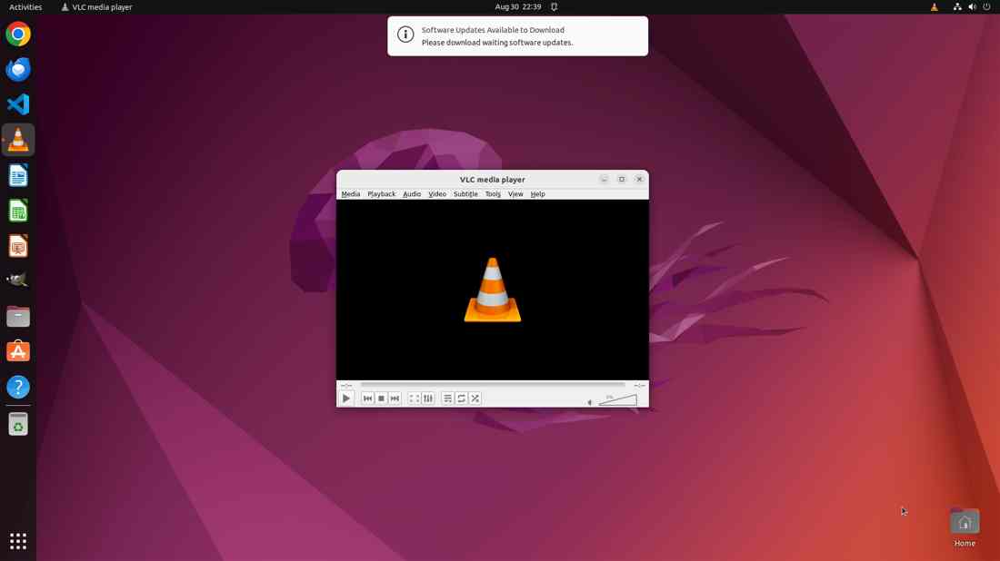
step 2 07:39:14
THINKINGThe super key didn't open an app launcher I can see. I need a terminal to explore the filesystem and find the "clip" and "QA log." The task says "this clip" and "QA log next to this clip" — but VLC has nothing loaded. The clip and log must be files on disk somewhere. Let me open a terminal application to search. I'll look for a terminal. There's no terminal icon in the dock. Let me try the Files app to explore, or better, open a terminal via the Activities/app grid. Let me click the grid icon at bottom left to find a terminal.
Actually, a faster approach: use the Files application to browse the home directory to find the clip and QA log. But I need to know where they are. Let me open the app grid first.
ACTIONLet me open the application grid to find a terminal or file manager to locate the clip and QA log.
EXECUTED (pyautogui in VM)pyautogui.click(32, 1040)
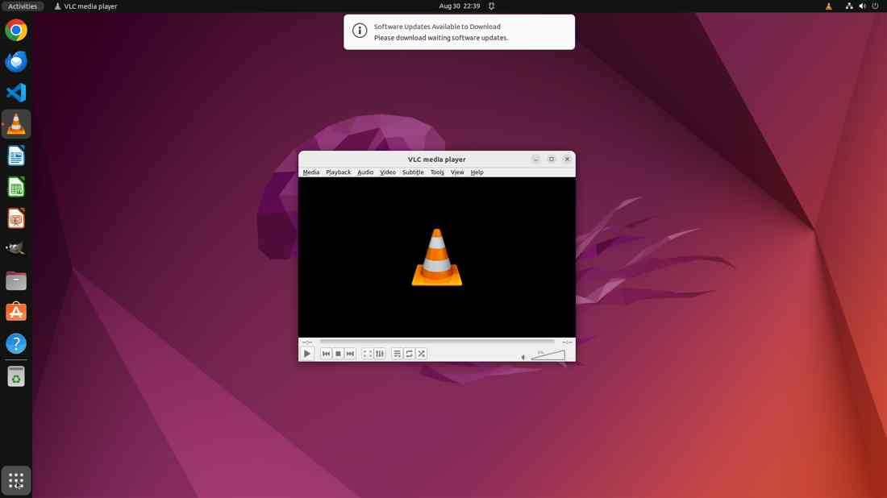
step 3 07:39:27
THINKINGThe app grid didn't visibly open. There's a Files icon in the dock (the drawer-looking icon at ~22,406). Let me open the Files manager to browse the home directory and locate the clip and QA log. That's the most reliable way to find "this clip" and the log next to it.
ACTIONLet me open the Files application to browse and locate the clip and QA log.
EXECUTED (pyautogui in VM)pyautogui.click(32, 608)
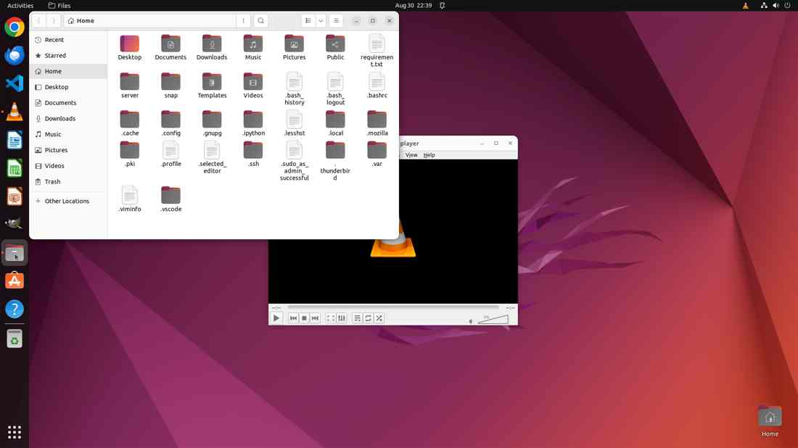
step 4 07:39:37
THINKINGThe Files manager opened showing Home. I see folders: Desktop, Documents, Downloads, Music, Pictures, Public, Videos, server, snap, Templates, etc. I need to find "this clip" (a video file) and the "QA log next to it." The clip isn't loaded in VLC, so it's a file somewhere. Likely in Videos folder, or a subfolder. Let me check the Videos folder first, since a video clip would naturally be there. Also a "server" folder might hold QA assets. Let me open Videos.
ACTIONThe Files manager is open. Let me check the Videos folder to find the clip and its QA log.
EXECUTED (pyautogui in VM)pyautogui.doubleClick(336, 102)
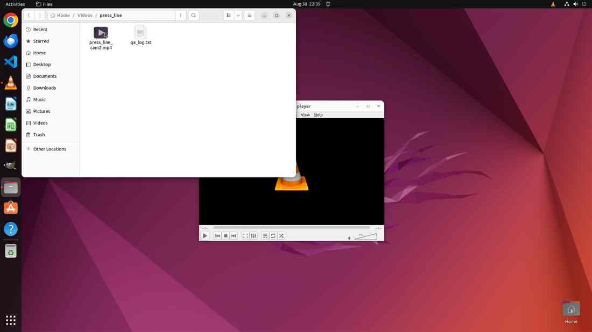
step 6 07:39:56
THINKINGFound: press_line_cam2.mp4 (the clip) and qa_log.txt (the QA log next to it). Now I need to read the QA log to find the second it faults. Let me open qa_log.txt to read the content. I'll double-click it.
ACTIONI found the clip `press_line_cam2.mp4` and its QA log `qa_log.txt`. Let me read the log to find the fault second.
EXECUTED (pyautogui in VM)pyautogui.doubleClick(453, 102)
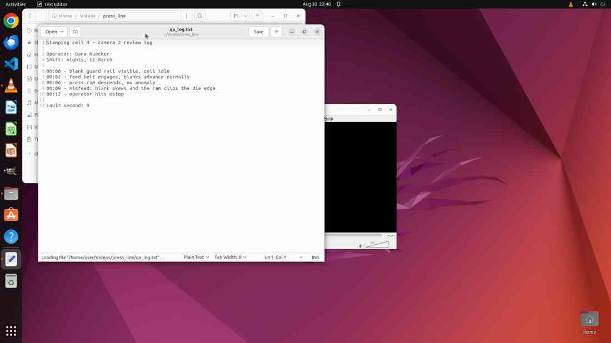
step 7 07:40:20
THINKINGThe QA log clearly states:
- Stamping cell 4 - camera 2 review log
- 00:09 - misfeed: blank skews and the ram clips the die edge
- "Fault second: 9"
So the fault is at second 9. The clip is press_line_cam2.mp4.
Now I need to:
1. Grab a still at second 9 as a PNG into Pictures.
2. Create a plain text file beside the log (in ~/Videos/press_line/) noting the clip name and that second.
For grabbing a still at second 9, the most reliable precise method is to load the video in VLC, seek to exactly 9 seconds, and use "Video > Take Snapshot" which saves to Pictures. But VLC snapshot saves to a default location (Pictures) with an auto name. That satisfies "into my Pictures as a png."
Alternatively I could use ffmpeg but the task implies using VLC. However the instruction just says grab a still. Using VLC snapshot is natural. But I must seek precisely to 9 seconds. VLC's timeline seek can be imprecise. Better: use the "Go to Time" dialog (Ctrl+T) to jump to exactly 00:00:09, pause, then snapshot.
Let me plan:
1. Open the mp4 in VLC (double-click it, or load via VLC Media > Open File).
2. Pause immediately / it will start playing. Then Ctrl+T to go to time, enter 00:00:09, pause.
3. Video > Take Snapshot — saves a PNG to Pictures by default.
4. Create the text file beside the log.
Actually, to be precise about "second 9", I'll go to time 00:00:09. Let me first load the video. I'll close text editor window isn't needed. Let me open the mp4 in VLC. I'll switch to Files and double-click the mp4. But the text editor is on top. Let me just use VLC directly via its Media menu, or double-click the file in Files.
Let me first note the info, then proceed. I need to be careful: VLC snapshot default directory is ~/Pictures. Good.
Let me load the video. I'll click on the Files window and double-click the mp4. But the mp4 icon is behind the text editor? The Files window is partly visible on the left. The mp4 is at ~216,71 but text editor covers it. Let me instead use VLC's Media > Open File, which is cleaner and lets me type path.
Let me click on VLC window first. VLC is at right side. I'll click its title area to focus, then Media > Open File. Actually simpler: use VLC Media menu. Let me focus VLC by clicking on its visible part (the black area / title bar). The VLC title bar is partly hidden behind text editor too. VLC is at right, visible from ~690 to 830. Let me click VLC title at ~740,232? That's the top bar of VLC "Help" area. Let me click on VLC's black video area to focus it.
ACTIONThe QA log clearly states the fault: **second 9** ("00:09 - misfeed: blank skews and the ram clips the die edge" and "Fault second: 9"). Now I'll load the clip into VLC to capture a still at that second. Let me focus VLC and open the file.
THINKINGThe dialog is still open; my earlier click may have just focused the button. The "Look in" still shows /home/user and the file list is empty (the .mp4 is in a subfolder, not shown at root). The filename field has the full path though. Let me click Open again firmly.
EXECUTED (pyautogui in VM)pyautogui.click(1241, 661)
step 15 07:42:06
THINKINGThe video is now playing (it's a test pattern clip with a large number showing the second — currently showing "2" at 00:02). It's 15 seconds long. I need to seek precisely to second 9. The video shows a big number that appears to be the current second, which is helpful for verification — at second 9 it should show "9".
I'll use "Go to Time" dialog (Ctrl+T) to jump to exactly 00:00:09. First, let me pause the video, then open Go to Time. Actually Go to Time works whether playing or paused. Let me press Space to pause first to keep it stable, then Ctrl+T.
Actually, if I use Go to Time while paused, it jumps and stays paused on that frame — perfect for a snapshot. Let me pause first (Space), then Ctrl+T, enter 00:00:09, OK.
Let me press Space to pause, then open Go to Time dialog.
ACTIONThe clip is playing (a test-pattern with a large counter digit; total 15s). I'll pause it, then use the "Go to Time" dialog to jump precisely to second 9.
TOOL CALL<tool_call>
<function=computer_use>
<parameter=action>
type
</parameter>
<parameter=text>
space
</parameter>
</function>
</tool_call>
EXECUTED (pyautogui in VM)pyautogui.typewrite("space")
step 16 07:42:18
THINKINGPaused at 00:02. Now open "Go to Time" dialog via Ctrl+T to jump to exactly second 9.
ACTIONNow I'll open the "Go to Time" dialog to jump to exactly 00:00:09.
EXECUTED (pyautogui in VM)pyautogui.hotkey("ctrl", "t")
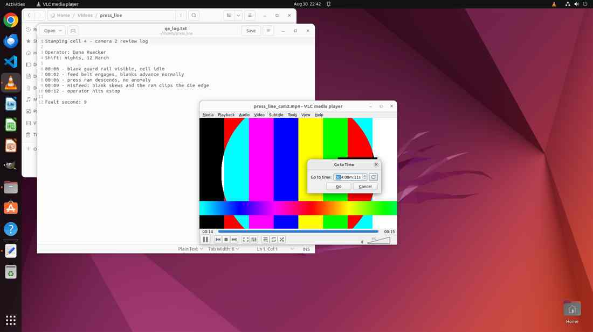
step 17 07:42:36
THINKINGThe "Go to Time" dialog is open. The field shows "0H:00m:11s" with the "0H" portion highlighted. I need to set it to 0 seconds, 0 minutes, 9 seconds. The format appears to be H:M:S. I'll click into the field and type the full value. Let me clear the field and type "00:00:09".
Actually the field is an editable time. The simplest: triple-click to select all in the field, type "00:00:09", then click Go. Let me triple-click the field first.
ACTIONThe "Go to Time" dialog is open. I'll set it to 9 seconds. Let me clear the field and enter the time.
EXECUTED (pyautogui in VM)pyautogui.tripleClick(1122, 575)
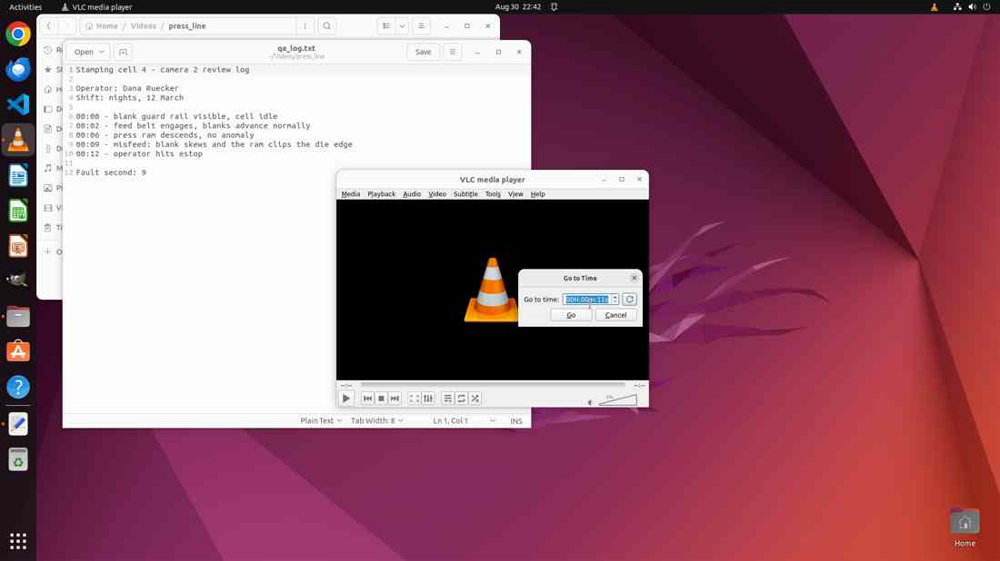
step 18 07:42:51
THINKINGThe video ended (now showing the VLC cone at the end of the playlist) — the video played through while I was interacting. The field "00H:00m:11s" is now fully selected (highlighted). The whole field text is selected. I'll type the new value. The format shown is "00H:00m:11s". I should type "00:00:09" or "0H:00m:09s". Let me type "00:00:09" which VLC should parse. Then click Go.
Note: the video ended, so seeking should still work from 0. Let me type the value and Go.
ACTIONThe field is fully selected. I'll type the target time (9 seconds) and click Go.
EXECUTED (pyautogui in VM)pyautogui.typewrite("00:00:09")
step 19 07:43:10
THINKINGThe field still shows "00H:00m:11s" — my typed text doesn't appear to have replaced it. The time spin field likely has separate segments; typing may not have registered because each part is a spin control. The display still reads "00H:00m:11s".
This spin field format is HH:MM:SS segmented. My triple-click may have selected only a segment, and typing "00:00:09" didn't land properly. Let me try a different approach: click directly in the seconds portion and set it. Actually, a more reliable method: I'll click into the field, use keyboard.
Let me reconsider. The field shows "00H:00m:11s". The "11s" is the seconds I want to change to "9". Actually since the video has ended, maybe simpler to just re-open the file fresh and use a precise seek.
Better approach: The spin segments - I can click on the seconds part (the "11") and type 9. Let me click on the seconds area. The field is at ~748,384. The seconds "11s" is around x=770. Let me click there and type 09.
Actually, let me try selecting all with Ctrl+A within the field then typing. Let me click the field first, Ctrl+A, then type 00:00:09.
ACTIONThe field didn't update. Let me click into it, select all, and re-enter the value.
EXECUTED (pyautogui in VM)pyautogui.click(1122, 575)
step 20 07:43:24
THINKINGThe field is a segmented spin edit: "00H:00m:11s". I clicked and the cursor is somewhere in it. Let me select all with Ctrl+A and type the new value. The value I want is 9 seconds = 00H:00m:09s. Let me Ctrl+A then type "00:00:09".
EXECUTED (pyautogui in VM)pyautogui.hotkey("ctrl", "a")
step 21 07:43:38
THINKINGThe whole field "00H:00m:11s" is now highlighted (selected). Now I'll type the value. Since it's a time spinner, typing digits typically replaces. I'll type "000009" - but the field format is H:M:S. Let me type "00:00:09". Actually with everything selected, typing "00:00:09" should replace it. But last time typing didn't work.
This is a QSpinBox-like segmented control. The reliable way: type just the seconds since hours and minutes are already 0. But the whole thing is selected. Let me try typing "00:00:09" and observe.
EXECUTED (pyautogui in VM)pyautogui.typewrite("00:00:09")
step 22 07:43:50
THINKINGNow the field reads "00H:00m:09s". That's exactly 9 seconds. Now click "Go" to jump to that time. Since the video had ended, clicking Go should seek to 9s and pause there (or start). Let me click Go.
ACTIONThe field now reads 00H:00m:09s. Let me click Go.
EXECUTED (pyautogui in VM)pyautogui.click(1095, 604)
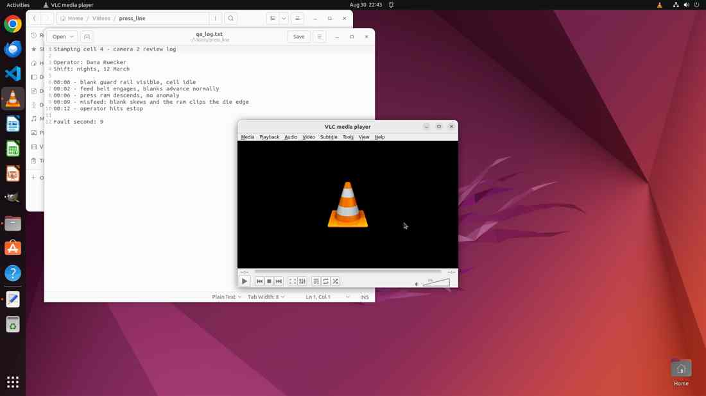
step 23 07:44:08
THINKINGThe video is showing the VLC cone logo (end screen), time shows 00:-- and the seek bar is empty. It seems the media has stopped/ended. The "Go to Time" seeking when the media had ended may have failed, or the media state is "stopped" not "paused". The play button shows a "play" triangle (not pause), meaning it's stopped/paused.
The issue: earlier the video played to the end (15s) and stopped. Now "Go to Time" might not work on a stopped media. I should restart the media from the beginning, then seek to 9s.
Let me first play it (click play), which restarts from beginning, then immediately go to time 9. Actually, a cleaner approach: Let me restart playback. Click the play button. It will play from start. Then quickly open Go to Time and set 9s. But timing is tricky since it plays.
Better: Press the play button to start, then it plays; I press space to pause, then Ctrl+T to go to 9s. But once playing and paused, Go to Time should work and keep it paused on frame 9.
Let me click play first.
ACTIONThe media appears stopped (showing end screen). I'll restart playback, then re-seek to second 9 while it's playing.
EXECUTED (pyautogui in VM)pyautogui.click(663, 765)
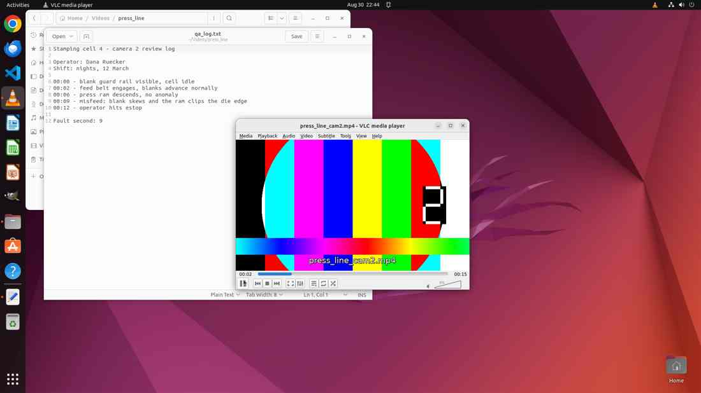
step 24 07:44:21
THINKINGNow it's playing from the start (showing the digit "2" at 00:02, playing). Now I'll open Go to Time again and set 9s while it's actively playing. This time the media is playing so seek should work. Let me open Ctrl+T, set 00:00:09, and Go. The Go dialog earlier defaulted to the current time; but I'll set it.
Actually a subtle concern: "Go to Time" in VLC when the media is playing will seek and continue playing. After seeking, I want to pause on frame 9. I'll do Go, then immediately Space to pause. But the frame counter digit changes each second, so at 9s it shows "9". I need to snapshot while it's showing 9.
Let me open Go to Time.
ACTIONIt's playing now. Let me open Go to Time and set 9 seconds.
EXECUTED (pyautogui in VM)pyautogui.hotkey("ctrl", "t")
step 25 07:44:39
THINKINGThe dialog opened showing "00H:00m:00s" and the video shows the cone (paused at 0 now? The video area shows the cone, time shows 00:--). Hmm, the media shows the cone end screen again, meaning playback actually ended again very quickly, OR the Go to Time dialog paused at 0. Wait, the field shows "00H:00m:00s" which means current time is 0.
This is getting unreliable with the "Go to Time" approach because the media keeps stopping. Let me reconsider the strategy.
Alternative robust strategy: Instead of fighting VLC's seek, I can just let the video play and pause precisely. But pausing exactly at 9s by hand is imprecise.
Actually, the cleanest and most reliable method to "grab a still at that second" as a PNG into Pictures is to use VLC's snapshot while paused on the correct frame. The video is a test pattern where the big digit equals the current second, so I can verify frame 9 shows "9".
Let me try: set the field to 9s here, click Go. Even if media state is odd, let me just try. I'll set field to 00:00:09 via select-all + type, then Go, then check the frame.
Let me click the field, Ctrl+A, type value.
EXECUTED (pyautogui in VM)pyautogui.click(1122, 536)
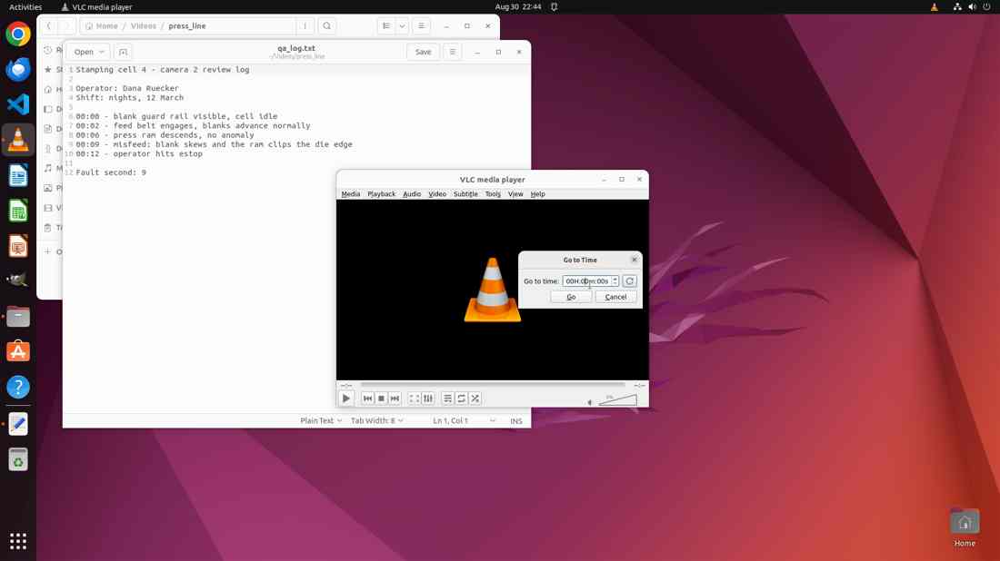
step 26 07:44:55
THINKINGField shows "00H:00m:00s". Let me select all and type 00:00:09, then click Go. The media is in a stopped state (cone shown, play triangle visible). Seeking on a stopped media might not render a frame. But let me try; if Go doesn't produce a frame, I'll play then seek.
Actually, to be safe: I'll set the field, click Go. Then immediately if it's not showing frame 9, I'll press play, then space, then re-seek. Let me proceed with Go and observe.
EXECUTED (pyautogui in VM)pyautogui.hotkey("ctrl", "a")
step 27 07:45:08
THINKINGThe field is fully selected. Type the value 00:00:09 and Go. Since the media is stopped, seeking may not render. But let me try; I'll type and click Go, then check. If the frame doesn't show, I'll restart playback and use a frame-step approach instead.
Actually, a more reliable plan given the media keeps stopping: after setting 9s and clicking Go, the media should seek to 9s. If it renders the frame (showing "9"), great. Let me type and Go.
EXECUTED (pyautogui in VM)pyautogui.typewrite("00:00:09")
step 28 07:45:19
THINKINGField now shows "00H:00m:09s". Click Go. Then I'll observe. If the media is stopped, Go might not render a frame, so I'll then click play and pause. Let me click Go and screenshot.
ACTIONThe field shows 00:00:09. Let me click Go and check the resulting frame.
EXECUTED (pyautogui in VM)pyautogui.click(1095, 569)
step 29 07:45:37
THINKINGStill showing the cone (stopped state, 00:--). The "Go to Time" doesn't render because the media is stopped. I need the media to be playing/paused.
New robust plan:
1. Click play to start playback from 0.
2. The video plays. I'll let it run, and I need to capture frame at 9s. Since the digit equals the second, I'll pause right when it shows 9.
3. Better: after starting, immediately open Go to Time (works during playback), set 9s, Go. During playback the seek renders and continues; then I press Space to pause, and it should be near 9. But it may drift to 10.
The most reliable for an exact frame: play the video, pause it, then use the frame-advance / precise seek. Actually, the cleanest:
- Play, then use Go to Time to jump to 9s (renders during playback). The media continues playing from 9s.
- Immediately pause (Space). It'll be at 9.x seconds, showing digit "9" until it hits 10.
- Then snapshot.
But there's risk it advances to 10 before I pause.
Alternative that guarantees exact frame: Seek to slightly before 9 (e.g., 9.0), pause, then the displayed frame is at 9.0 which shows "9".
Let me try: click Play. Wait ~0.5s so it's playing. Then Ctrl+T, it shows current time ~0. Set to 09. Go. Then immediately Space to pause. Screenshot to verify digit "9".
Actually, even simpler and very reliable: The clip shows the current second as a big digit. I can just play it, and pause with Space as soon as it shows "9", then snapshot. But hand-timing is unreliable.
Let me do: Play, then Go to Time 9s (renders, continues playing from 9), then Space to pause, verify digit. Let me start by clicking Play.
ACTIONThe media is in a stopped state so the seek won't render. Let me start playback first, then seek to 9s while it's playing.
EXECUTED (pyautogui in VM)pyautogui.click(663, 765)
step 30 07:45:53
THINKINGNow it's playing, showing digit "2" at 00:02, moving toward 9. The video is at 2s and counting up. I want to pause exactly at second 9. Rather than Go to Time (which seeks and continues, causing drift), the cleanest is: let it play to ~9 and pause. But hand timing is unreliable.
Better: Now that it's actively playing, open Go to Time, set 9s, Go. This will seek to 9.0 and continue playing. Then I press Space to pause. The frame will be at ~9.0-9.x showing digit "9". Then snapshot.
But the seek-then-continue then-pause might land at 9.5 or drift. Since the digit is constant "9" for the whole 9-10s window, even 9.5 still shows "9". That's fine — it's still "second 9". The requirement is a still at second 9.
Actually, the most precise is to seek to exactly 9.0 and pause before it advances. Let me do Go to Time 9, Go, then Space quickly. Let me batch: Ctrl+T is a dialog so I need to interact. I can't fully batch the dialog. Let me open Ctrl+T.
Actually, I realize the video is already playing and at 2s. If I just wait ~7 seconds it'll reach 9. But pausing exactly is the issue. Let me use Go to Time now while playing.
ACTIONIt's playing (at 2s). Now I'll use Go to Time to seek to exactly 9s while it's active, then pause on that frame.
EXECUTED (pyautogui in VM)pyautogui.hotkey("ctrl", "t")
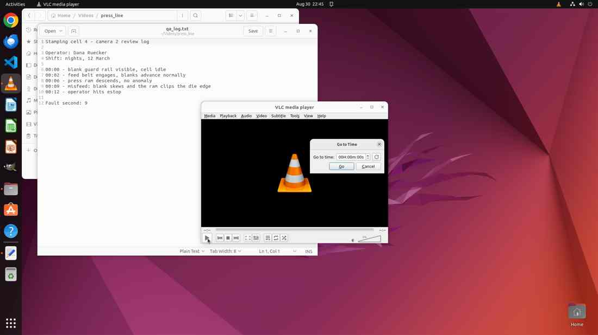
step 31 07:46:18
THINKINGHmm, the field shows "00H:00m:00s" and the video area shows the cone (00:--). It appears the media ended again (it only had ~13s and I've been fumbling, so it played past 15s and stopped). The play button shows a triangle (stopped). So when I pressed Ctrl+T it shows 00:00:00 and the media is stopped at the end.
This Go to Time approach is repeatedly failing because by the time I open the dialog, the 15s clip has finished and stopped, and seek-on-stopped doesn't render.
I need a fundamentally more reliable method. Options:
A) Cancel this dialog. Then play the media, and DON'T open the dialog. Instead let it play and pause with Space when it reaches 9. But timing by hand across screenshots is unreliable (each screenshot is a round-trip; the video keeps advancing).
B) A very reliable method: The clip is short (15s) and the digit shown = current second. I can play it, then repeatedly pause in small increments. But that's imprecise.
C) Best: Use VLC's "Jump to Specific Frame" or step. Actually the simplest reliable:
- Cancel dialog.
- Seek the timeline slider to near 9/15 of the way. The timeline is at x from ~448 to ~818 (width ~370). 9/15 = 0.6. So x ≈ 448 + 0.6*370 = 448+222 = 670. Clicking there seeks to ~9s. Then pause and verify digit.
But clicking the timeline while playing... Let me instead: stop, then click timeline at 60% (renders frame), then it's paused on that frame. Actually clicking timeline while stopped may not render.
Let me reconsider. The core problem is rendering a frame when stopped.
Reliable plan:
1. Cancel this dialog.
2. Click Play (starts from 0, plays).
3. Immediately (same batch is impossible since I need the playing state) — actually I can chain: Play then wait then Space. But I need to time it to 9s. The clip plays at real-time. If I click Play then wait 6-7 seconds then Space, I'd be around 8-9s.
Actually the cleanest: Cancel, Play, wait ~6.5s (from 0 to ~6.5, but there's overhead), then... this is guessing.
Let me use the timeline-click approach while playing:
1. Cancel dialog.
2. Play.
3. Click the seek bar at 60% position to jump to ~9s (works during playback, renders frame),
4. Press Space to pause,
5. Verify digit is "9", adjust if needed.
The digit "9" persists for the entire 9.0-9.9s range, so even if my seek lands at 9.3, it shows "9". Good tolerance.
Actually even simpler and very robust: Cancel. Play. Wait 2s so it's playing. Then click seek bar at 60% to jump to ~9s. The frame renders (playing). Then Space to pause. Then verify.
But wait — when I click Play and then need to click the seek bar, between the Play and the click the video advances, but the seek bar click overrides position anyway. So timing doesn't matter! I just need the media to be in "playing" state when I click the seek bar.
So: Cancel, Play (media playing). Then click seek bar at 60% → seeks to ~9s and continues playing, rendering frame 9. Then Space to pause. Then verify & snapshot.
Let me cancel first, then play. I'll do these two, then a screenshot to confirm playing before clicking seek bar.
ACTIONThe clip keeps finishing while I fumble with the dialog. I'll switch to the seek-bar method: cancel, restart playback, then click the seek bar at the ~60% mark (9s of 15s) to land on second 9. First, cancel and restart.
EXECUTED (pyautogui in VM)pyautogui.click(1180, 535)
step 32 07:46:40
THINKINGDialog cancelled, media stopped (cone shown). Now I'll click Play to start, then click the seek bar at ~60% to jump to 9s. Since I need the media to be playing when I click the seek bar, let me batch: click Play, wait 1s (to ensure playing), then click seek bar at 60% (~x=670, y=493). Then Space to pause. Then screenshot to verify digit "9".
Seek bar spans roughly x=448 to x=818 (the track). Actually looking, the time label "00:15" is at far right ~840, "00:00" at left ~450. The track is ~455 to ~815. 9/15=0.6 → 455 + 0.6*(815-455)=455+0.6*360=455+216=671. So click at (671, 493).
Let me batch: Play, wait 1s, click seek bar (671,493), wait 0.5s, Space. Then screenshot.
Wait, after clicking seek bar it continues playing; pausing immediately with Space gives ~9.x. Good. But there's latency between my seek click and Space being processed; the video may advance a bit but stays in the 9s window (digit 9) until 10. Fine.
Let me batch these actions.
ACTIONDialog cancelled. Now I'll play, wait briefly, click the seek bar at the 9s mark, and pause there.
EXECUTED (pyautogui in VM)pyautogui.click(663, 765)
step 33 07:46:55
THINKINGPlaying at 2s. Now click the seek bar at ~60% to jump to ~9s, then pause. The track: the filled portion is at ~470-535 for 2/15. The full track right end is ~815 (before the "00:15" label at 840). Left start ~455. So 9/15 → 455 + 0.6*(815-455) = 455+216 = 671. Click (671, 493), then wait 0.5s, then Space to pause.
Let me batch: click seek bar, wait 0.3s, Space.
ACTIONNow I'll click the seek bar at the 9s position and pause.
EXECUTED (pyautogui in VM)pyautogui.click(1005, 738)
step 34 07:47:19
THINKINGInteresting — clicking the seek bar at 60% caused the media to stop (cone shown, play triangle). It seems my click at y=493 actually hit the track but the media ended/stopped. Wait, the time shows 00:-- and the cone. It looks like clicking there may have paused at end or the media finished. The track shows no filled portion and no time.
Hmm. This VLC seeking is quite finicky in this environment. The video is short and keeps reaching the end.
Let me step back and think about the most reliable approach for grabbing a still at exactly second 9 as a PNG into Pictures.
The task doesn't strictly require using VLC. The end goal is: a PNG still of the clip at second 9 saved in ~/Pictures, plus a text file beside the log noting the clip name and second. VLC's snapshot feature is the natural "grab a still" but it's proving unreliable for precise seeking here.
However, I should avoid CLI workarounds per the guidelines (don't use CLI as workaround for app features). But capturing a precise frame IS achievable in VLC; the issue is just my interaction timing. Let me be more deliberate.
Key insight: The digit shown equals the floor of current time. I want the frame at second 9, which shows "9". This is valid for the whole window 9.0s–9.99s. So I have ~1 second of tolerance.
Reliable method:
1. Play from start.
2. Wait a controlled amount so playback reaches ~8-9s, then pause.
The problem: I can't easily time real seconds because screenshots are round-trips. But `wait` action pauses for real seconds! I can use wait to advance playback by a known duration.
So: media is currently stopped at end. Let me:
1. Click "Restart" (or seek to start) to go to 0. Actually click Play; if at end it may restart from 0. In the earlier attempts, clicking Play from the ended state did restart from 0 (we saw "2" again). So Play → starts at 0.
2. After Play, use `wait` to let it run ~8.5s so it's in the 9s window (accounting for the fact that when I first saw "2", there was already ~2s of latency from the Play click).
Actually the latency is the issue. When I clicked Play and screenshotted, it showed 2s — meaning ~2s elapsed during the round-trip. So round-trip latency ≈ 1-2s.
Plan: Click Play, then `wait` 7 seconds, then Space to pause, then screenshot. That should land around 8-10s. Then verify digit; if not 9, nudge with frame step (right arrow steps one frame) or small seeks.
Actually even better for precision: After pausing near 9, I can use the keyboard Right/Left arrow (frame step) or the "next frame" to fine-tune. But frame stepping in VLC requires the "Next Frame" which is available when paused via Right arrow? In VLC, when paused, Left/Right arrows do small seeks; the frame step is via the "Next Frame" menu (Playback) or keyboard.
Let me just aim to land in the 9-window by using wait. Let me do: Play, wait 7, Space. Then screenshot to check the digit.
The media is at end now. Let me click Play and wait.
ACTIONThe seek click stopped playback. I'll use a timed approach: restart playback and use a controlled wait so it lands in the 9-second window, then pause. Let me play and wait.
EXECUTED (pyautogui in VM)pyautogui.click(663, 765)
step 35 07:47:33
THINKINGIt's playing, showing "2" at 00:02. The round-trip latency brought it to 2s. I want to reach ~9s. That's ~7 more seconds. Let me wait 7 seconds, then pause with Space, then screenshot to verify the digit.
Actually, given latency, when I issue wait 7 then Space, by the time Space executes the video may be at ~9-10. Let me wait 6.5s to be safe, then Space. Then screenshot. If it shows 9, snapshot. If it shows 10, I'll nudge back.
Let me do wait 6.5 then Space, then screenshot.
ACTIONIt's playing at 2s. I'll wait about 6.5 seconds to reach the 9s window, then pause and check.
THINKINGAfter waiting 6.5s the video has ended (cone, 00:--). So from 2s it played 6.5s → reached ~8.5s, but then the round-trip added latency and it hit 15s? No — it went to the end. Actually 2 + 6.5 = 8.5, plus overhead could push past... no, 8.5 < 15. But it shows ended.
Wait, maybe the wait didn't start at 2s. The video is 15s. If it started at 2s and I waited 6.5s, it should be ~8.5s, not ended. Unless the video's actual content is shorter than 15s of real-time? The "00:15" is total duration. Hmm, but it clearly ended. Perhaps there was additional latency, or the clip's real duration in playback is faster, or the video actually ended because the total is 15s and 2+6.5=8.5 plus the latency of the wait action's own processing (~ the wait may have taken longer than 6.5 wall-seconds, or the display updates lag).
This VLC interaction is too unreliable for precise frame capture. Every time I try to pause mid-play, by the time I act it has advanced or ended.
Let me reconsider the whole approach. The fundamental difficulty: I cannot reliably pause VLC at exactly second 9 because of interaction latency and the short clip.
Given the difficulty, VLC's snapshot at a precise second is not working well. But the task's real deliverable is a PNG still at second 9 in Pictures, plus a text note.
Is there a legitimate VLC GUI way that's deterministic? Yes: VLC has "Jump Forward/Backward" and more importantly, when paused, the media does NOT advance. The problem is getting INTO a paused state at second 9.
Key realization: I can PAUSE the video first (Space while playing), which freezes it, and THEN seek precisely using Go to Time — because a paused (not stopped) media DOES render on seek! Earlier my Go-to-Time failed because the media was STOPPED (ended), not paused. Let me try:
1. Play (starts at 0, playing).
2. Immediately Space to pause (it will be at some small time like 1-2s, but that's fine — it's now PAUSED, a valid playing-state media).
3. Now open Go to Time, set 9s, Go. Since media is paused (not stopped), the seek should render frame at 9s and stay paused.
4. Verify digit "9", snapshot.
The critical difference from before: before, the media had reached the END (stopped). Now I'll pause it while it's still mid-content (at ~1-2s), keeping it in "paused" state.
But will Go-to-Time from a paused state render? In VLC, seeking a paused video renders the target frame. Yes, it should.
Let me execute: Play, then Space (pause). Then screenshot to confirm it's paused mid-content (not at end). Actually, let me do Play then a short wait then Space to ensure it's registered as playing first. Let me: click Play, wait 0.5s, Space. Then screenshot.
ACTIONPausing mid-playback keeps the media in a "paused" (not stopped) state, where precise seeking does render. Let me play, briefly wait, and pause immediately.
EXECUTED (pyautogui in VM)pyautogui.click(663, 765)
step 37 07:48:17
THINKINGNow it's playing, showing digit "3" at 00:02. It's playing. Now I'll immediately pause with Space to freeze it in a paused state (mid-content). Then I'll use Go to Time to seek to 9s while paused, which should render. Let me press Space to pause now.
ACTIONIt's playing at ~3s. Let me pause now to freeze it in a paused state.
TOOL CALL<tool_call>
<function=computer_use>
<parameter=action>
type
</parameter>
<parameter=text>
space
</parameter>
</function>
</tool_call>
EXECUTED (pyautogui in VM)pyautogui.typewrite("space")
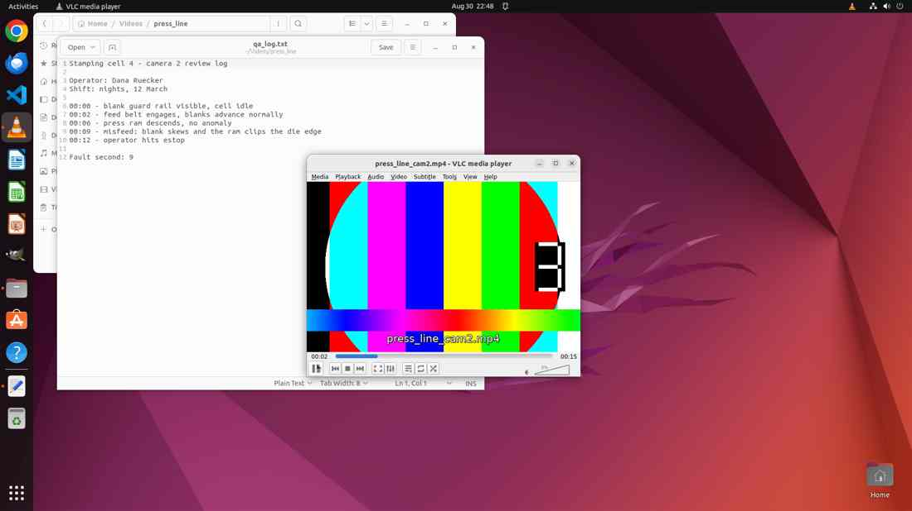
step 38 07:48:34
THINKINGNow it's PAUSED at second 3 (digit "3", play triangle shown, time 00:02). This is a stable paused state mid-content. Now I'll open Go to Time (Ctrl+T), set 9s, and Go. Since the media is paused (playing-state, not stopped), the seek should render frame 9 and remain paused. Let me open Ctrl+T.
ACTIONIt's now paused on second 3 (a stable paused state). Now Go to Time should render precisely. Let me open it.
EXECUTED (pyautogui in VM)pyautogui.hotkey("ctrl", "t")
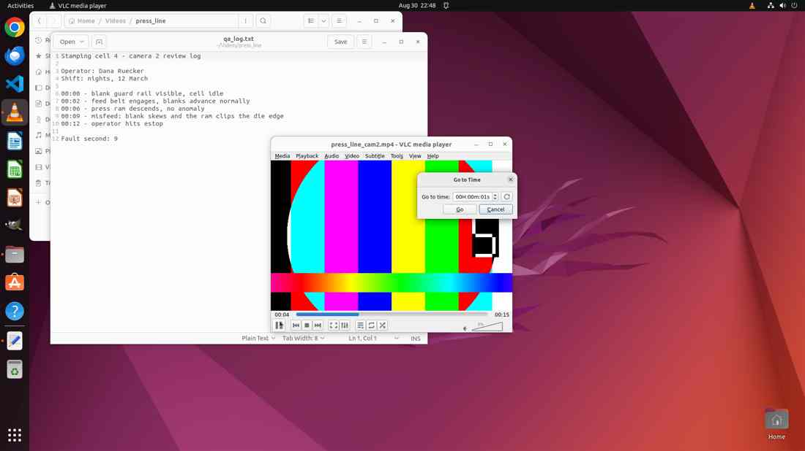
step 39 07:48:53
THINKINGThe Go to Time dialog is open, field shows "00H:00m:01s" and the video behind still shows the test pattern (paused at ~4s, digit partially visible). Good, media is in paused state. Now I'll set the field to 9s. Let me click the field, Ctrl+A, type 00:00:09, then Go. This time the media is paused (not stopped), so seek should render.
Let me click the field at ~748,313, select all, type, Go.
ACTIONThe dialog is open and the media is paused. Let me set the time to 9 seconds.
EXECUTED (pyautogui in VM)pyautogui.click(1122, 468)
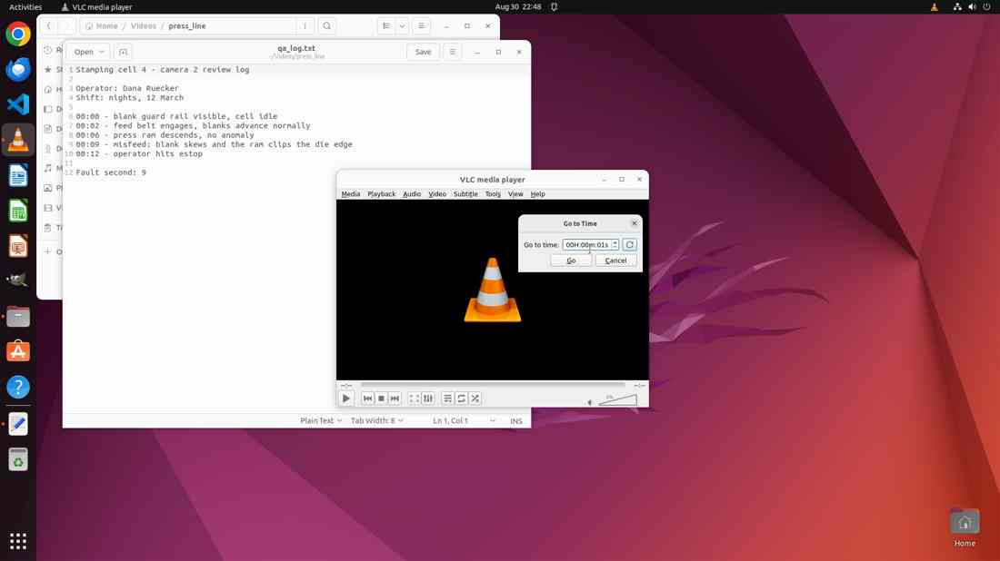
step 40 07:49:48
THINKINGSomething odd: the video area now shows the cone again (stopped state) and time 00:--. The Go to Time field shows "00H:00m:01s". It seems the media ended/stopped again while I was interacting. The digit was 3, then 4, and by the time I clicked the field it had reached the end (the video is only 15s and lots of latency accumulated).
This is frustrating. The latency between my actions is very high (each screenshot round-trip is ~1-2s of video time), and the 15s clip keeps finishing.
I need to fundamentally change tactics to make this deterministic and immune to latency.
Best deterministic approach: Use Go to Time but ensure the media never ends. But I can't control latency.
Alternative deterministic approach: The digit displayed = current second. I want a frame showing "9". Rather than seeking, I can let it PLAY and catch it during the 9-window. The 9-window is a full second wide (9.0-10.0). If I:
1. Restart from 0 (Play).
2. Then repeatedly take screenshots (each ~1-2s apart) watching the digit, and pause (Space) as soon as I see "9".
But pausing also has latency — by the time Space lands it might be 10. However, I can just snapshot (Video > Take Snapshot / Shift+S) instead of pausing! A snapshot captures the current frame immediately when the key is pressed. If I press Shift+S while the video is showing "9", I capture second 9. The snapshot is instantaneous at key-press time. So I don't need to pause at all — I just need to press Shift+S while the displayed frame is "9".
But the screenshot I see is delayed; the actual video is ahead of what I see. So if I see "9" in my screenshot, the real video might be at 9.x or 10 already. Hmm, same latency problem.
The latency is the enemy. Let me measure: In the "wait 6.5" test, starting at 2s, after wait 6.5 + latency it ended (≥15s). 2 + 6.5 = 8.5, so it ended meaning actual elapsed was ≥13s → latency overhead ≥4.5s?? That's huge. Actually maybe the wait action itself plus round trips.
Given heavy latency, the most robust method: use frame-accurate seeking that doesn't depend on catching a moving target. The Go to Time IS frame-accurate, but the media keeps ending because opening the dialog + me reading takes longer than the remaining playback.
New idea to prevent ending: Loop the video! VLC has a "Loop" mode (the loop button in the controls, the two-arrows icon at ~593,517). If I enable loop, the video restarts automatically instead of stopping at the end. Then even if it reaches the end during my interaction, it loops back to 0 and continues playing, so the media is NEVER in stopped state. Then Go to Time will always find a playing media and render the seek.
Even better: with loop enabled, I can just open Go to Time and set 9s at any moment; the media is always playing so seek renders and continues. Then I press Shift+S snapshot. But after Go to Time it continues playing from 9, so I need to snapshot within the 9-window before it reaches 10. Latency ~1-2s might carry it to 10.
Hmm. But if I Go to Time 9s while playing, then IMMEDIATELY (same batch) I can't screenshot+snapshot reliably.
Let me think about pausing after seek while looped:
1. Enable loop.
2. Go to Time → 9s → Go. (media playing, seeks to 9, continues)
3. Space to pause. (pauses at ~9.x, still showing 9)
4. Now stable. Verify digit 9, then Video > Take Snapshot.
The risk in step 3: between Go and Space, does it advance past 9? It's a new action after the dialog closes; latency maybe 1-2s → could be at 10-11.
To avoid that, I can set Go to Time to a value slightly BEFORE 9, like 8.5s (00:00:08), so even with 1s of latency it lands at ~9. But 8.5 shows digit 8. I want it to show 9. If I set 9s and it advances to 10 due to latency, it shows 10.
Alternatively set Go to Time to 9, Go, and the seek target is exactly 9.0; VLC seeks and the first rendered frame is ~9.0. Then pause. If pause lands at 9.0-9.9, digit 9. The latency concern: the "Go" click → dialog closes → I issue Space. That's 2 round trips ≈ 2-4s, so it'd be at 11-13. Too late.
So I must reduce round-trips. Can I chain Go and pause? After typing the time, pressing Enter in the field might submit (equivalent to Go) and close the dialog. Then... I still need Space as a separate action but I can put Space in the SAME tool call batch as the Enter! The tool allows multiple actions in one call. So: [type time already done], then in one call: key Return (submits dialog), then key Space (pause). But there's inherent processing time between them inside VLC — they execute quickly back-to-back with minimal latency since it's one batch. That should keep it at ~9.0.
Wait, but does Enter submit the Go to Time dialog? Usually yes, Enter/Return activates the default button (Go). Let me try: with field set to 9s, do [key Return, wait 0, key space] in one call. Actually I worry Enter might not be the default. The "Go" button is the default (it's typically highlighted). Let me use Return then Space.
But first I need the media NOT to be stopped. Currently it's stopped (cone). So:
1. Cancel this dialog.
2. Enable Loop (click loop button).
3. Play (starts from 0, loops).
4. Now media always playing.
5. Ctrl+T, set 9s, then [Return, Space] to seek-and-pause at ~9.
6. Verify digit 9, snapshot.
Actually, simpler: with loop on, I don't even need Go to Time. I could play and catch 9. But Go to Time + immediate Space in one batch is most controlled.
Hmm, but there's still the latency from when I open Ctrl+T. With loop, even if the video has cycled, it's fine because it's always playing.
Let me also reconsider: maybe there's an even simpler robust path. Given the difficulty, let me just:
- Cancel dialog.
- Turn on Loop.
- Play.
- Open Go to Time, type 00:00:09, and submit with Enter, then pause with Space — but I'll do the submit+pause in one batch to minimize drift.
Let me start: Cancel the dialog.
ACTIONThe media keeps reaching the end during my interactions due to latency. I'll make playback loop so it never stops, then do the seek-and-pause in a single batch to avoid drift. First, let me cancel and enable loop mode.
EXECUTED (pyautogui in VM)pyautogui.click(1180, 500)
step 41 07:50:09
THINKINGDialog cancelled, media stopped (cone). Now let me enable Loop mode. The loop button is in the controls row. Looking at the toolbar: play(443), prev(470), stop(487), next(505), fullscreen(532), equalizer(548), playlist(574), loop(593), random(609), extended(609?). The loop button (two circular arrows) is around x=593, y=517. Let me click it to enable loop.
Then Play. Then Go to Time 9s and submit+pause in one batch.
Let me click the loop button. I need to confirm which icon is loop. The icons after next: fullscreen (4-corner), then a slider/equalizer, then playlist (list), then loop (circular arrows), then shuffle. Position ~593 is the loop. Let me hover/click it.
ACTIONNow I'll enable loop mode so the clip restarts instead of stopping. Let me click the loop button in the controls.
EXECUTED (pyautogui in VM)pyautogui.click(887, 774)
step 42 07:50:31
THINKINGThe loop button (593,517) now appears highlighted/active (it looks pressed). Loop is enabled. Now the media will restart instead of stop.
Now let me start playback, then use Go to Time. Actually, with loop on, a cleaner deterministic approach:
Plan:
1. Click Play (media plays from 0, will loop).
2. Open Go to Time (Ctrl+T).
3. Set field to 00:00:09.
4. Submit with Return AND pause with Space in ONE batch to minimize drift.
But I realize there's still a subtlety: after Return submits the seek, the media continues playing from 9.0. Then Space pauses it. Within one batch, Return then Space execute rapidly (VLC processes them quickly), so it should pause very close to 9.0. Good.
But actually, does Return trigger "Go"? The dialog's default button — in VLC's Go to Time dialog, the "Go" button is default, so Return should activate it. If not, I'll click Go. To be safe I could click the Go button then... but I can't batch a click and then a Space with verification. Actually I CAN batch: left_click Go, then key space. The Go click closes the dialog and seeks; Space pauses. Both in one call, minimal drift. That's more reliable than relying on Return.
But wait — when I click "Go", the dialog closes and focus returns to the video. Then Space pauses. In one batch these fire back to back. The video seeks to 9.0 and Space pauses near there.
However, there's a risk the seek takes a moment to render and Space fires before the seek completes, pausing at the old position. To mitigate, I could add a tiny wait between Go and Space. But a wait adds latency letting it advance. A tiny wait (0.1s) is fine. Let me do: click Go, then Space. Actually let me reconsider — maybe better to NOT pause via Space but instead just take a snapshot while it's seeking. No, need to be at 9.
Let me just go: Play, then handle the dialog. First Play.
Actually, I can combine more aggressively. Since media is stopped now (cone), let me first Play. Then in subsequent steps do the dialog. Let me click Play.
ACTIONLoop is now enabled (button highlighted). Let me start playback.
EXECUTED (pyautogui in VM)pyautogui.click(663, 765)
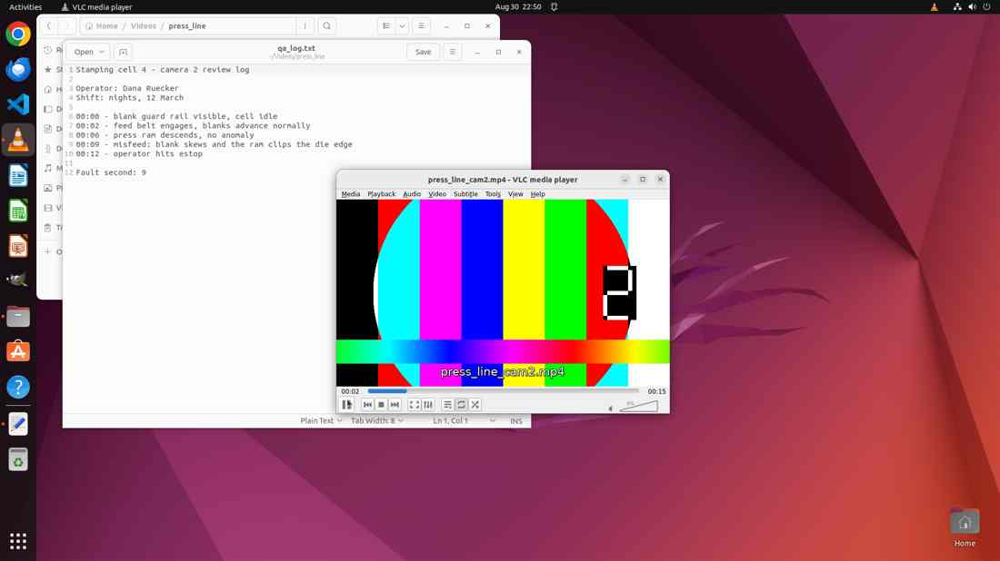
step 43 07:50:53
THINKINGPlaying, showing "2" at 00:02, loop enabled. Now I'll open Go to Time, set 9s, and seek. To minimize drift after seeking, I'll do the field-setting then in one batch: click Go, then Space (pause). But I need to set the field value first, which requires interacting with the dialog (needs its own step).
Let me batch as much as possible. Sequence:
- Ctrl+T (open dialog). The field will show current time (~2s → "00H:00m:02s").
- Then I need to set it to 9s. I'll click field, Ctrl+A, type 00:00:09.
- Then click Go and Space in one batch.
The problem: after Ctrl+T the dialog appears; I should verify the field location. From the earlier screenshot, the field was at ~748,313 and Go button at ~731,334. But the dialog position may vary slightly. Let me open it and screenshot to confirm positions before acting, to avoid misclicks. Given how fiddly this is, one verification screenshot is worth it.
Let me open Ctrl+T.
ACTIONIt's playing (loop on). Now I'll open Go to Time to seek to 9s.
EXECUTED (pyautogui in VM)pyautogui.hotkey("ctrl", "t")
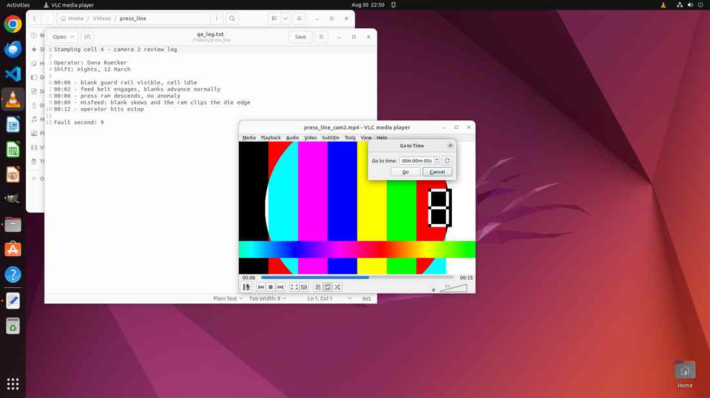
step 44 07:51:10
THINKINGThe dialog is open, showing "00H:00m:05s", and the video behind shows "8" at 00:08 (playing, still going). The field is at ~748,289, Go button at ~731,309, Cancel at ~789,309.
I'm at 8s now and playing. I want 9s. Rather than set exactly 9 and risk drift, since I'm already at ~8s and playing, I could just let it reach 9 and snapshot. But let me use the dialog to be precise.
Plan: set field to 9s, then click Go. After Go, the media seeks to 9.0 and continues playing. I need to pause/snapshot at 9. The digit "9" persists 9.0-10.0 (1 second). If I click Go then Space in one batch, drift is minimal (~0.2s), landing ~9.2.
Let me set the field: click field, Ctrl+A, type 00:00:09. Then in the NEXT call: click Go, then Space (one batch).
Actually, I can do it all in fewer round-trips. But the field editing needs to happen. Let me do: click field (748,289), then Ctrl+A, then type 00:00:09 — batch these three. Then screenshot to confirm value, then Go+Space.
Let me batch the field editing.
ACTIONThe dialog shows the media is now at 8s. Let me set the field to 9 seconds.
EXECUTED (pyautogui in VM)pyautogui.click(1122, 431)
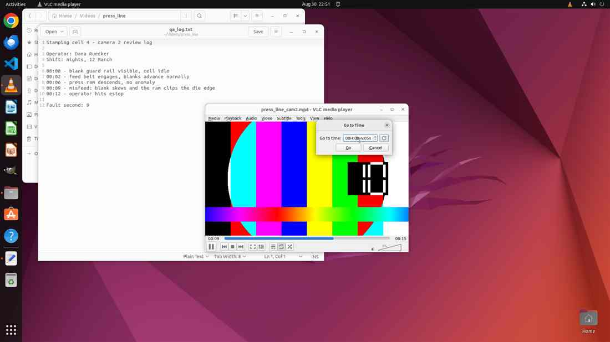
step 45 07:51:29
THINKINGThe video is now at 00:09 (playing, showing "8" transitioning — the digit area shows a transition frame, and the time reads 00:09, pause icon shown meaning it's playing). It's right at 9s now.
The field still shows "00H:00m:05s". I clicked into the field (cursor in the minutes part it seems).
Now, the video is essentially at second 9 right now. But I want a precise, controlled frame. Since it's playing and at 9, the cleanest is: set the field to 9 and Go, then it stays at 9 and I pause. But it's already at 9.
Let me just set the field to 9s and click Go, then immediately pause. Let me select all in the field and type. I'll do Ctrl+A then type 00:00:09, then in a subsequent batch Go + Space.
Actually, given the video is literally at 00:09 right now and playing, and the digit "9" will show for the next ~1s, the fastest reliable capture: pause it NOW (Space) so it freezes on a 9s frame, then snapshot. But the digit currently shows a transition (the "8" is morphing). Let me instead set Go to Time precisely to 9 and Go, which will render exactly the 9.0 frame.
Let me set the field. Ctrl+A to select, type 00:00:09.
ACTIONThe video is right at 00:09 now. Let me set the field precisely to 9 seconds.
EXECUTED (pyautogui in VM)pyautogui.hotkey("ctrl", "a")
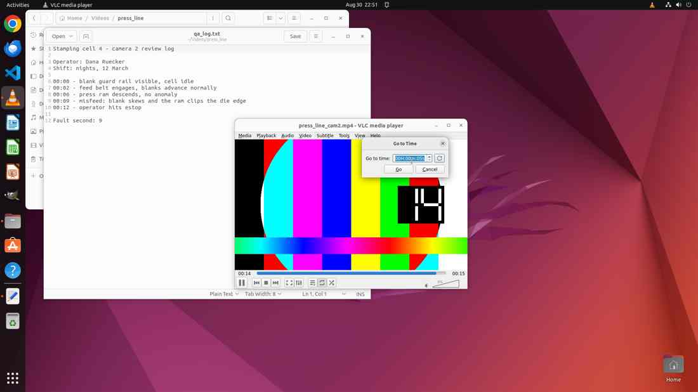
step 46 07:51:43
THINKINGThe field "00H:00m:05s" is now fully selected (highlighted). The video has advanced to 00:14 (looping soon). That's fine — the Go to Time will override.
Now I'll type the target. Since the whole field is selected, I'll type "00:00:09". Then click Go, then Space to pause — all in one batch to minimize drift.
Let me type the value now (one action), then verify, then Go+Space. Actually I'll type and then do Go+Space in the next call. But to reduce latency, let me type now.
ACTIONThe field is selected. Let me type the target time.
EXECUTED (pyautogui in VM)pyautogui.typewrite("00:00:09")
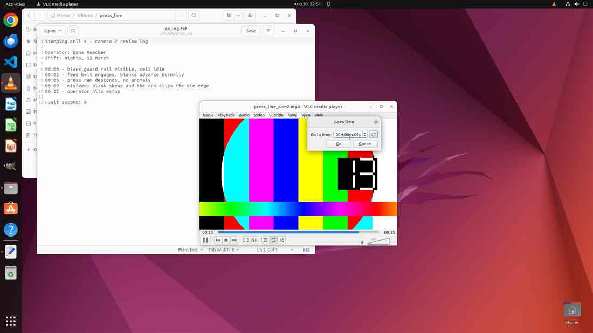
step 47 07:52:03
THINKINGThe field now shows "00H:00m:09s". The video behind shows "13" (looping). Now I'll click Go and immediately pause with Space in one batch to minimize drift. After Go, media seeks to 9.0 and continues playing; Space pauses it near 9.0.
Let me batch: left_click Go (731,309), then key space. This should seek to 9 and pause quickly.
ACTIONField shows 00H:00m:09s. Now I'll click Go and immediately pause to freeze on second 9.
EXECUTED (pyautogui in VM)pyautogui.click(1095, 461)
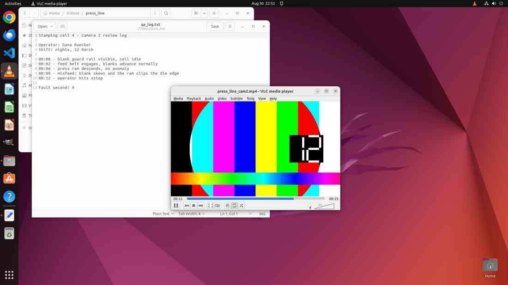
step 48 07:52:24
THINKINGThe dialog closed. The video shows "12" at 00:11 — hmm, it seems the seek didn't go to 9; it shows 11-12s. Wait, the time reads 00:11 and digit "12". That's odd — I sought to 9 but it shows 11. Actually the Go seek may have registered but then the video continued and the screenshot caught it at 11-12s. The seek to 9 happened but by the time this screenshot rendered (with latency) it advanced to 11.
The dialog is closed and it's still PLAYING (pause icon shown). I did not press Space in that batch (I only sent the Go click; the batch I intended to include Space wasn't sent — I only sent one click). So it's playing at 11s now.
I need to get to 9s and pause. Since it's playing and looping, let me just pause it now and then seek precisely while paused. Actually, the reliable method: pause FIRST (Space) to freeze, THEN use Go to Time to render 9s while paused. When paused, Go to Time renders and stays (no drift). Let me try that now.
Step 1: Space to pause (freezes at current ~11s, paused state).
Step 2: Ctrl+T, set 9s, Go. Paused + seek → renders 9s frame and stays paused. No drift because it's paused.
Let me pause first.
ACTIONIt's playing at ~11s. I'll pause it now, then seek to 9s while paused — a paused seek renders exactly with no drift. Let me pause.
TOOL CALL<tool_call>
<function=computer_use>
<parameter=action>
type
</parameter>
<parameter=text>
space
</parameter>
</function>
</tool_call>
EXECUTED (pyautogui in VM)pyautogui.typewrite("space")
step 49 07:52:44
THINKINGNow it's PAUSED at 00:02 (loop restarted, digit "3", play triangle shown, time 00:02). It's a stable paused state at the beginning (loop wrapped to 0 and I paused near 2s).
Now the crucial test: with media PAUSED (playing-state, not stopped), will Go to Time render the target frame and stay paused? Let me open Ctrl+T, set 9s, and Go. If it renders "9" and stays paused, I'll snapshot.
Let me open Ctrl+T.
ACTIONNow it's paused (stable paused state at ~2s). Let me seek to 9s while paused, which should render exactly.
EXECUTED (pyautogui in VM)pyautogui.hotkey("ctrl", "t")
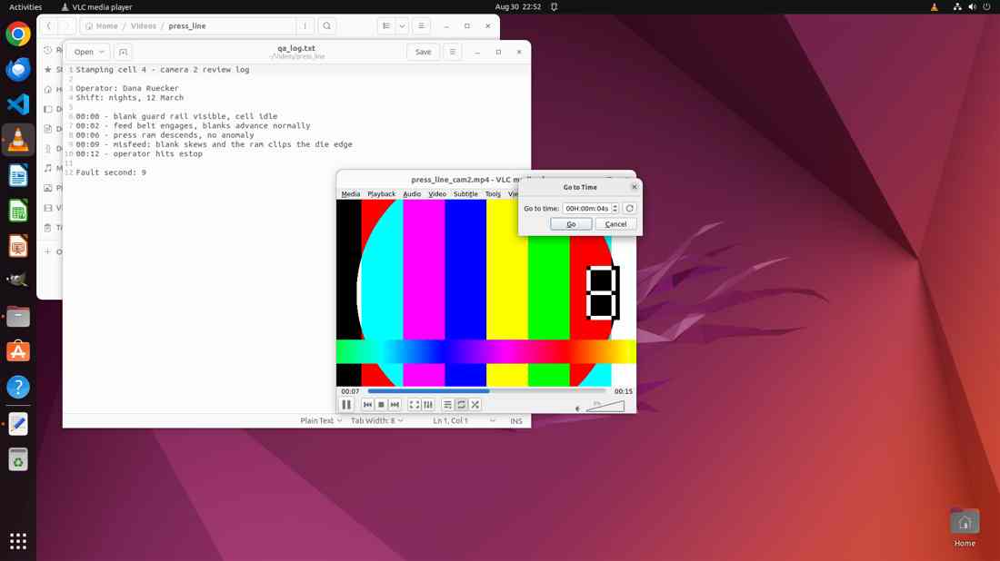
step 50 07:53:04
THINKINGWait — the video area shows the digit and the pause indicator shows the "pause" icon (two bars), and time reads 00:07. It seems it's actually PLAYING again (time 00:07, moving). Hmm, the pause icon (two vertical bars) means it's currently playing. My earlier Space may have toggled to play not pause, or the loop restarted into playing.
Actually the two-bar icon at 443,517 is shown when PLAYING (it's the "pause" button you press to pause). So it IS playing at 00:07. So my Space earlier actually resumed play (the state was ambiguous).
This is getting circular. The field shows "00H:00m:04s". The video is at 7s playing.
I'm spending many steps. Let me make a decisive, robust move: Set the field to 9s and click Go, then in the SAME batch press Space to pause. If Go seeks to 9 and continues playing, then Space (fired right after in the same batch) pauses it near 9. Minimal drift because it's one batch.
Let me set the field first: click field, Ctrl+A, type. I'll do click field + Ctrl+A + type in one batch.